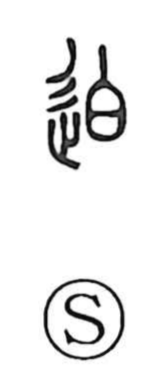

迫

Uncategorized
Kun: semaru | On: haku
to press ・ to approach ・ urgency ・ oppress ・ menace
Explanation
A phono-semantic character, 迫 takes 白 (haku) as its phonetic, which Shirakawa understands as echoing the onomatopoetic clap of two hands. The graph as a whole conveys closing in until contact—hands meeting and pressure being felt. The Shuowen rightly glosses it as “to get closer.” From this core idea it came to express being pressed or driven by circumstances, the imminence and tension of a situation, and by extension the act of bearing down on others—oppression and coercive menace.